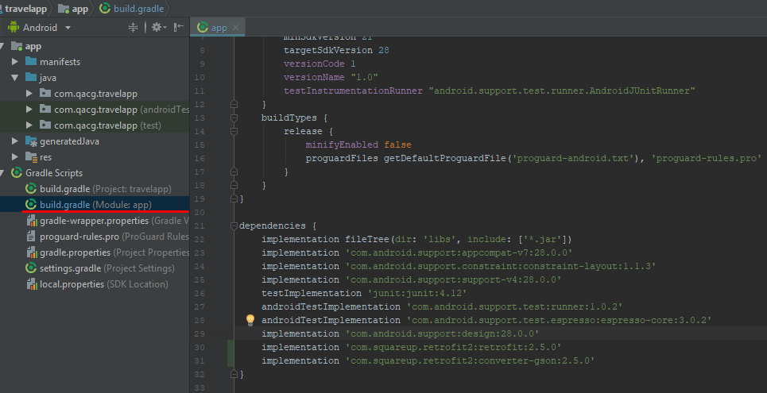
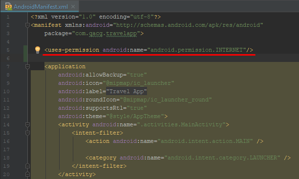

Librerías Android
A continuación se listan las librerías, que comunmente se utilizan durante el desarrollo de una aplicación
Android.
Retrofit - Se describe a si mismo de la siguiente manera,
"Convierte una REST API a una interfaz Java", permite a travéz de anotaciones agregar un cuerpo en la petición,
manipular los parametros de la URL y encabezados de la petición.
Gson - Se utiliza para la serialización y
deserializacion de objetos Java a JSON y al revés ( de JSON a objetos Java).
Glide - Librería utilizada para descargar imágenes desde una URL.
JodaTime - Libreria que facilita enormemente el manejo de fechas como el parseo, formato, etc.
Prettytime - Formato de fechas para Java con un formato de redes sociales.
Realm - Es un motor de bases de datos local utilizada en Android.
Google Maps - Integración con mapas de Google.
Tipos de librerías
Podemos encontrar dos formas de agregar librerías a nuestra aplicación:
Localmente - Los archivos de la libreria deben ser
descargados para poder incluirlas en la aplicación.
Remotas - Se agregan como una dependencia de Gradle para
que al momento de realizar la sincronizacion, Gradle descargue las dependencias correspondientes en el proyecto.
Retrofit y Gson - Autenticación de usuarios
Vamos a integrar las librerías Retrofit y Gson para poder sustituir la autenticación "dummy" por
una autenticación remota.
Para esto, será necesario consumir el siguiente servicio web:
https://travelapp-api.herokuapp.com/api/user/autenticate
El cual recibe y devuelve los siguientes datos en formato JSON a través de una peticion POST.
-
Configurando Retrofit
-
Agregar las siguientes dependencias en el archivo Gradle de la aplicación.
implementation 'com.squareup.retrofit2:retrofit:2.5.0'implementation 'com.squareup.retrofit2:converter-gson:2.5.0'
 -
Sincronizar el script gradle para descargar las dependencias agregadas.
-
Crear el paquete api dentro del paquete travelapp.

-
Archivo de servicios
Crear el archivo ITravelResource.java en el paquete api, esta será la interfaz donde se van a declarar los servicios web.
-
Inicializacion de Retrofit.
Crearemos el objeto retrofit, utilizando el patron singleton, para ello, creamos el archivo ResourceGenerator.java en el paquete api y agregar el contenido de configuración.
-
-
Integrando la autenticación de usuario
-
Configurando nuestro servicio web de autenticación
Agregamos el método authenticateUser en la interfaz ITravelResource.java, nuestro archivo quedará de la siguiente forma:
-
Permisos de acceso a internet
Agregamos el permiso para acceso a internet de la aplicación en el archivo AndroidManifest.xml:
 -
Preparando nuestro modelo de Peticion/Respuesta
Realizaremos unas pequeñas modificaciones a nuestra clase User.java, para poder serializar y deserializar correctamente los datos que se envian y reciben del servidor.
Agregamos una anotación para la serializacion de objetos para el campo userName, esto nos permite recibir y enviar correctamente el nombre del campo username al momento de serializar/deserializar la clase User.java
Agregamos un constructor que recibe como argumentos el usuario y password.
Agregamos métodos para manejo de error(es) de red.
-
Agregamos el método connectionUnavailable en el archivo ILoginView.java.
-
Implementamos el método connectionUnavailable en la clase LoginActivity.java.
Agregamos el siguiente string en el archivo de strings.
strings.xml
strings.xml (en)
-
-
Invocación del servicio web
Modificaremos a nuestro presentador para consumir el servicio web de autenticación.
-
Retrofit - Listado de lugares
Integraremos el servicio web que devuelve el listado de lugares que son mostrados en la pantalla principal de la aplicación. Para ello se invocará el siguiente servicio web.
GET -> https://travelapp-api.herokuapp.com/api/place/all
El cual retorna un modelo de respuesta como la siguiente.
-
Configurando el servicio web
Agregaremos la configuración del servicio web de lugares en el archivo ITravelResource.java
-
Modificando el modelo
Realizaremos las siguientes modificaciones al modelo para asegurar la correcta serialización de datos.
-
Declaracion del handler de error(es) de conexión
Agregamos el medodo void connectionUnavailable(); en el archivo IPlacesView.java
-
Implementamos el handler de errores en el fragmento PlacesFragment.java
-
Invocando al servicio web
Removemos el listado de lugares "dummy" en el presentador PlacesPresenter.java y agregamos la invocacion al servicio web que devuelve el listado de lugares.
Ejecutar la aplicación
Al ejecutar la aplicación, deberán tantos lugares como los devueltos por el servicio web.

Glide - Carga de imágenes.
Integraremos la librería Glide para mostrar las imágenes a partir del URL devuelto por el servicio web.
-
Dependencias
Agregar la siguiente dependencia en el archivo Gradle de la aplicación.
implementation ("com.github.bumptech.glide:glide:4.8.0") { // Excluimos la libreria de soporte que provee la libreria // Ya que estamos implementando la version mas reciente. exclude group: "com.android.support" } -
Modificaciones al adaptador
-
Recibimos el contexto en el constructor.
Implementamos transformaciones y la carga de imágenes.
-
-
Pasar el contexto al adaptador.
En el archivo PlacesFragment.java, pasar el contexto al instanciar el adaptador.
Nuestro método init() quedería de la siguiente forma.
-
Actualizamos nuestra vista.
Realizamos las siguientes modificaciones al archivo place_item.xml
-
Ejecutar la aplicación
Al ejecutar la aplicación, las fotos de perfil del usuario y la imagen del post deberían mostrarse correctamente.